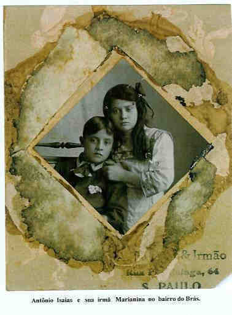

Antônio Isaias Petrella
- Nascido em: 16 Mar 1904, Sertãozinho, Sp
- Casamento: Ermelinda Barbieri em 6 Fev 1926
- Falecido: 15 Mai 1944, Brooklin, Sp com 40 anos de idade

 Notas Gerais: Notas Gerais:
Antônio Isaias nasceu em 16-03-1904, na fazenda Neca Junqueira, município de Sertãozinho, comarca de Ribeirão Preto -SP e faleceu em 15-05-1944, no Brooklin SP-SP.
Casou em 06-02-1926, com Ermelinda Barbieri (nascida em 31-03-1907, em Salto de Itu e falecida em 16-01-1998, SP-SP, era filha de Vicente Barbieri e Adriana Quinarelli ).
O casal gostava muito de dançar. Freqüentavam o Clube Piratininga que, na ocasião, era um dos melhores do Brás. Nesse clube, ganharam vários concursos, troféus e medalhas como melhores dançarinos.
O Isaias era corintiano fanático, assim como seus três filhos.
N as. Ele faleceu no dia de um jogo do Corinthians. Era um jogo muito bom e importante, ele estava ruim mas lúcido, e assim mesmo falou para a sua mulher Ermelinda - Liga o rádio que eu quero ouvir o jogo.
Morreu ouvindo o jogo do Corinthians.
Depois da sua morte o Corinthians marcou um gol e a sua esposa ficou ainda mais entristecida porque ele não chegou a ouvir e ficar um minuto a mais feliz.
Eventos notáveis em Sua vida foram:

(Clique na Foto para vê-la no Tamanho Original)")
• fotos: Ermelinda e Antonio Isaias.

(Clique na Foto para vê-la no Tamanho Original)")
• fotos: Antônio Isaias e Ermelinda - 1928.

• fotos: Antônio Isaias e sua irmã Marianina no bairro do Brás.
Antônio casad[:o::a] Ermelinda Barbieri, filha de Vicente Barbieri e Adriana Quinarelli, em 6 Fev 1926. (Ermelinda Barbieri nasceu em em 31 Mar 1907 em Salto DE Itu e faleceu em 16 Jan 1998 em Sp, Sp.)
Notas de Casamento:
Ele faleceu no dia de um jogo do Corinthians. Era um jogo muito bom e importante, ele estava ruim mas lúcido, e assim mesmo falou para a sua mulher Ermelinda - Liga o rádio que eu quero ouvir o jogo.
Morreu ouvindo o jogo do Corinthians.
Depois da sua morte o Corinthians marcou um gol e a sua esposa ficou ainda mais entristecida porque ele não chegou a ouvir e ficar um minuto a mais feliz.
|